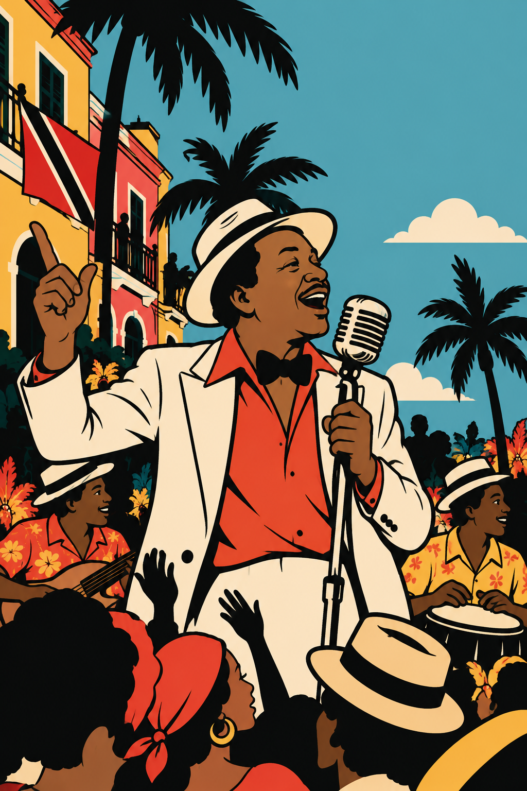

El monarca del calipsoThe Calypso MonarchDer Calypso-Monarch
El concurso Calypso Monarch (originalmente Calypso King) es el principal concurso de calipso que se lleva a cabo en Trinidad como parte de las celebraciones anuales del carnaval. Se celebró por primera vez en 1939, con Growling Tiger como ganador con la canción «Trade Union».
The Calypso Monarch competition (originally Calypso King) is the main calypso contest held in Trinidad as part of the annual carnival celebrations. It was first held in 1939, won by Growling Tiger with the song “Trade Union”.
Der Wettbewerb Calypso Monarch (ursprünglich Calypso King) ist der wichtigste Calypso-Wettbewerb in Trinidad und Teil der jährlichen Karnevalsfeiern. Er fand erstmals 1939 statt; Sieger war Growling Tiger mit dem Lied „Trade Union“.
Es un espacio que tradicionalmente los calipsonianos han usado para exponer su descontento frente a temas diversos, y curiosamente fue boicoteado en 1957 por Mighty Sparrow (Monarca del Calipso en 1956, 1960, 1962, 1963, 1972, 1973 y 1974) y otros calipsonianos, quienes consideraron que los premios que recibían los ganadores eran injustos. Por esta razón, Sparrow compuso el calipso «Carnival Boycott».
Calypsonians have traditionally used it as a stage to voice their discontent on all kinds of issues. Curiously, it was boycotted in 1957 by Mighty Sparrow (Calypso Monarch in 1956, 1960, 1962, 1963, 1972, 1973 and 1974) and other calypsonians, who considered the winners’ prizes unfair. Sparrow wrote the calypso “Carnival Boycott” in response.
Calypsonians nutzen ihn traditionell als Bühne, um ihren Unmut über verschiedenste Themen zu äußern. Kurioserweise wurde er 1957 von Mighty Sparrow (Calypso Monarch 1956, 1960, 1962, 1963, 1972, 1973 und 1974) und anderen Calypsonians boykottiert, weil sie die Preise für die Gewinner als ungerecht empfanden. Daraufhin komponierte Sparrow den Calypso „Carnival Boycott“.
Como dato interesante, no fue hasta 1978 que se «coronó» a la primera mujer: Calypso Rose, quien participó con dos calipsos, «I Thank Thee» y «Her Majesty». El concurso no se ha realizado en tres momentos: durante la Segunda Guerra Mundial (1942–1945), en 1950 y en 2021, este último por la pandemia del coronavirus.
Interestingly, the first woman was not “crowned” until 1978: Calypso Rose, who competed with two calypsos, “I Thank Thee” and “Her Majesty”. The competition has been cancelled three times: during the Second World War (1942–1945), in 1950, and in 2021 because of the coronavirus pandemic.
Interessanterweise wurde erst 1978 die erste Frau „gekrönt“: Calypso Rose, die mit zwei Calypsos antrat, „I Thank Thee“ und „Her Majesty“. Dreimal fiel der Wettbewerb aus: während des Zweiten Weltkriegs (1942–1945), 1950 und 2021 wegen der Coronapandemie.
